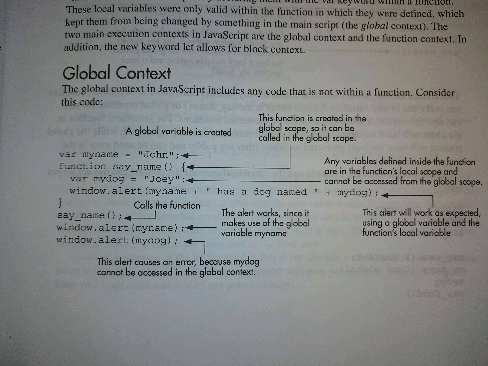
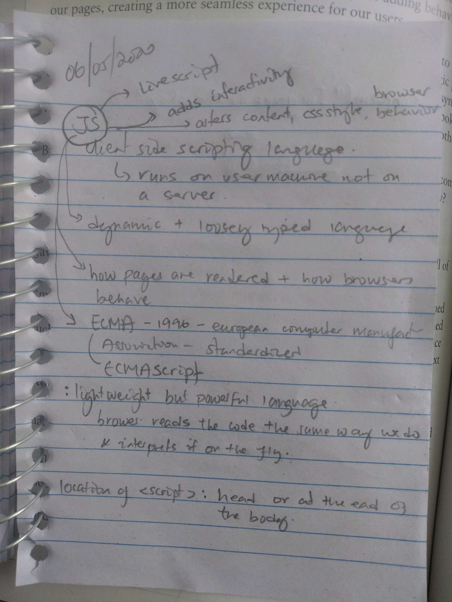

#Job related
- Resume and interview tips - Ian Schoonover
- interview early - apply early once you get your projects up
- create a mobile app
- eccomerce website + portfolio website + social media website with databases
- a login system
- create apps that solve different problems
- but don't dive deep into the apps
- solidify the type of job (languages / frontend / backend) you want do
- research the necessary steps for interviewing - find mentors online
- get a consistent schedule and stick to it
- wake up at the same time of the day - coffee
- try to build a personal project based on the course
- project works needs to be there in your day
#Employers are looking for:
--------------------------
* Strong knowledge of core JavaScript, React, Redux, and HTML5 / CSS3
* Deep knowledge of front-end build tools for validation, transpilation, and bundling (ESLlint, webpack, Babel, etc.)
* Experience building and deploying a single-page application for public use
* Experience developing and maintaining SaaS products
* Proficiency writing unit and integration tests
* Bachelor’s degree in Computer Science or a relevant field
* Strong understanding of UX and Design fundamentals
* Experience with d3.js
* Expertise in tuning web performance
* Knowledge of web serving architecture (e.g. CDNs, caching, load balancers)
* JavaScript (ES2019), NPM, React, TypeScript, Webpack
* Development and debugging tools like Git, Sentry, and Jest
#Resources
- codecademy
- freecodecamp - good for JS - git and github
- Web Frameworks are important [React maybe]
- Stephen Grider [check him out for React on Udemy] - Modern React with Redux -Node with React: FullStack Web Development
- You Don't Know JS Yet
#what is a clean code
- things (variables/functions) are named clearly - be consistent - always use camelCase
- indentation should be consistent
- break lines after 80 characters - do it before/after an operator or a comma
- revise your logic before coding - flow diagrams - written pseudo code
- write explanatory comments - comments should tell us why the code works not how it works!
-- authoring specification [//coded by Michael 07/19/2020]
-- detailing functionality [//this function validates the login form]
-- quick notifications or labels that state a recent change [//added e-mail validation procedure]
- break up large functions
*what's convenient isn't always what's best for the development process
*write your code as if comments didn't exist
*"if you feel your code is complex to understand without comments, your code is probably just bad"
#Bash
#to search and find a directory that contains a string
$find -name "*cabezas*" -type d
#bash compressing files - individual files - 7z using terminal
#first the application needs to be included in a the path, which is is a system variable - just copy paste the path of the application file to the path variable
#Git [born 2005] [resource video]
git init - initialize a repo
#initializing an empty repo - after manually creating it on github
------------------------------------------------------------------
echo "# todo-list" >> README.md
git init
git add README.md
git commit -m "first commit"
git remote add origin git@github.com:moinabyssinia/todo-list.git
git push -u origin master
#or push an existing repository from the command line
-----------------------------------------------------
git remote add origin git@github.com:moinabyssinia/calculator.git
git branch -M master
git push -u origin master
#if for some reason the url of the origin is messed up
------------------------------------------------------
$ git remote set-url origin https://github.com/moinabyssinia/todo-list.git
ls -a - to view hidden files in the repo
git status - check status of a repo
git remote -v - will display the URL of the repo created in github
touch index.html - create a new file
git add index.html - to add
git add . - adds all files to the staging area
git tm --cached <file> - to unstage
git commit -m "commit message"
git log - a history of commits
git checkout <commit-hash> - to go back to previous version of code
git config --global user.name "Your Name"
git config --global user.email "yourname@example.com"
git config --global color.ui auto - to enable colorful output with git
ls ~/.ssh/id_rsa.pub - check to see if I have SSH keys
ssh-keygen -C <youremail> - create an SSH key
cat ~/.ssh/id_rsa.pub - top copy the puvlic SSH key
git diff - shows the differences
git restore <file name> - reverts the changes made in the repo from being committed
##########
#branching
##########
----------
git pull - pulls all the new changes
git branch calc-divide - make a branch and work on it
git branch - lists out all the branches including the master
git branch -a lists all of the branches but more detailed
if there is an aterisk before a branch - then that is where we are working at the moment
git checkout git-resources - switches to the specified branch
git push -u origin git-resources - use this when pushing for the first time to a branch that is not master
#once the unit tests are done and now ready to merge
----------------------------------------------------
git reset --hard - if you want to discard local changes
git checkout master - switch to the master
git pull origin master - other collaborators might have changed on the project
git branch --merged - shows all the previously merged branches
git merge git-resources - merges it to the master
git push origin master
git branch --merged - double check everything was successfully was merged
git branch -d git resources - delete the branch now
git branch -a - see what we have localy and remotely
git push origin --delete git-resources - delete from remote repository
git branch -a - check again what branches we have remotely and locally
#when encountering the "Another git process esems to be running ..."
$rm -f .git/index.lock
#add gif to readme.md on github
-------------------------------
Save the file to your desktop, then upload it to the root of your GitHub Repository. - used capture to a gif chrome extention
Add this line to your README.md file where you want the GIF to show:

#when pulling from remote doesn't work - files just won't update
----------------------------------------------------------------
git fetch --all
git reset -- hard origin/master
git pull origin master
#make git never ask username and password - remember username/password
git config --global credential.helper store
#git concepts
- local version control systems
- centralized version control systems
- cvs, subversion , perforce -> have a single server that contains all the versioned files, and a number of clients that check out files from that central place - should the server go down or the hard disk of the central database fail, we loose everything
- distributed version control systems
- git, mercurial, bazaar darcs
- clients fully mirror the repository including its full history
- if the server dies, any of the client repos can be copied back to restore it
- collaboration with different groups of people simultaneously is allowed
- other VCS use the delta-based version control approach - store info as a set of files and the changes made to each file over time
- git thinks of its data more like a series of snapshots of a miniature filestyle - every time you commit, git basically takes a picture of what all your files look like at that moement and stores a reference to that snapshot - a stream of snapshots
- to browse the history of the project, git reads it directly from your local database
- on an airplane or train with no internet, you can commit happily until you get to a network connection to upload
- SHA-1 hash - 40 character string composed of hexadecimal characters - calculated based on the contents of a file or directory structure - git stores everything in its database not by file name but by the hash value of its contents
- The Three States
- modified: file changed but not commited to database yet
- staged: modified marked in its current version to go into your next commit snapshot
- committed: file safely stored in your local database
- In Git, origin is a placeholder name for the URL of the remote repository. Git sets up the origin by default when it clones a remote repository. You can use origin to access the remote repository without having to enter a full URL every time. This also means that you can have multiple remotes for a repository by giving each a unique name. origin is the name of the remote connection
- master is the official branch in your projects where production-ready code lives
Shortcuts
[VSCode] Shift + Alt + Down - selecting and using this command duplicates the code
#open terminal in Ubuntu
Ctrl + Alt + T
cd /mnt/c/Users/mi292519/Dropbbox/website/udemy_webdev/javascript - cd to a folder in windows
#terminal shortcuts
[readit] - ebook on the command line
#source = http://conqueringthecommandline.com/book/basics#cid7
---------------------------------------------------------------
$whoami - returns username
$touch test.txt - creates a new file
$touch index.html script.js style.css - creating multiple files at the same time
$export PS1="\u: $" - to shorten the name of the intro of the terminal
$cd ~ - goes to home directory
$ls /home/michaelgtadesse/ - lists files and folders in a different folder - must not be in the same folder
$ls -a - lists all the files including the hidden ones
$ls -l - lists out all in files and folders witl detailed information
$ls -l -h lists out the the sizes of the files and folders in a human readable format
$ls -l -h -S lists out the files by sorting from large to small
$ls -l -t the -t flag sorts files and directory based on the time they were modified
$mkdir foo - creates a directory called foo
$mkdir -p a/b/c - creates a, b, and c inside the parent directory
$rm blue.txt - removes the file blue.txt
$rm -r cuxhaven - removes the directory and all stuff it contains
$rm -rf colors - deletes the folder colors and subfolders too (recursive force)
$cp index.html style.css script.js folderCuxhaven - will copy the three files to the specified folde
$cp -v index.html style.css script.js cuxhaven/ - will show a verbose version of the copying process
$cp cuxhaven -Rv dresden - copies stuff inside the cuxhaven folder to the dresden folder with a verbose setting
$cp -r currentFolder /home/michaelgtadesse/Documents/webDev/js-practice/ - make sure to use relative location when moving stuff that is not located in the same directory
$mv folder/old-file.txt folder/new-file.txt. -renames a file
Ctrl + Shift + c - to copy from the terminal
Ctrl + Shift + v - to paste in the terminal
$code . - when typed inside the project folder, will open the entire folder in VS Code
$code . index.html - opens a new file index while opening the main folder too
#to disable going to sleep
#On Ubuntu 16.04 LTS, I successfully used the following to disable suspend:
sudo systemctl mask sleep.target suspend.target hibernate.target hybrid-sleep.target
And this to re-enable it:
sudo systemctl unmask sleep.target suspend.target hibernate.target hybrid-sleep.target
#to edit a markdown using vim
-----------------------------
$ vim README.md - open a file
press"i" to enter insert mode
type or edit the file
press ":wq!" to save and exit
press ":q" to exit witout saving
#open an html file using terminal
---------------------------------
google-chrome index.html
#unzip a file using the terminal - use the -d switch
----------------------------------------------------
$unzip filename -d directory


fork the upstream repository (my fork is also called origin) -> clone fork to local computer -> push to fork -> pull request
after editing/adding your stuff - take a moment before pushing it back to the fork
the upstream repo might be updated while I worked with the forked repo - so get new updates from the upstream
$go to the upstream repo and get the https/ssh url [for first time only]
git remote add upstream git@github.com:TheOdinProject/curriculum.git
$check your remotes now:
git remote -> origin (forked) and upstream (main repo)
$pull updates from upstream:
git pull upstream master
$alternative (explicit) way of doing the above:
#pull = fetch + merge
git fetch upstream -> grabs everything from upstream remote and records them as different branches locally
git merge upstream/master
finally push the new commits to your forked repo
$git push origin master
finally click the "create pull request" in the forked repo
#shortcut to open VSCode from command line
code
code my_first_rails_app //opens a file with that name
#JavaScript
#prefix and postfix increments/decrements
let test = 10;
console.log(test++)
returns 10
let test = 10;
console.log(++test)
returns 11
#tricky parts - prefix and postfix increments
#find a word - indexing
answer.indexOf("yes") === -1 //to check if the text doesn't exist
#last occurrence of a specified text
str.lastIndexOf("locate");
#specify starting position for the search
str.indexOf("locate", 15);
#rounded down division - giving just int results
Math.floor(5/2) = 2
#to print out results of a function
use console.log() to get the return value of a function if you want to see the results in the developer console
#commenting in Atom/Sublime
Ctrl + /
#to start the boilerplate in Atom
just type html -> hit tab
#live preview in VSCode
README
An extension to preview HTML files while editing them in VSCode
The extension can be activated in two ways
* Toggle Preview - ctrl+shift+v or cmd+shift+v
* Open Preview to the Side - ctrl+k v or cmd+k v
#to duplicate a line of code in VSCode
Windows:
Shift+Alt+Down and Shift+Alt+Up
Linux:
Ctrl+Shift+Alt+Down and Ctrl+Shift+Alt+Up
#shortcut to define a div with a specific class
just type the class with a dot in the beginning and press Tab
.container -> Tab
12/12/2019
Glossary:
API: part of a server that receives requests and sends responses; APIs are ready-made sets of code building blocks that allow a developer to implement programs that would otherwise be hard or impossible to implement. They do the same thing for programming that ready-made furniture kits do for home building. (DOM API, Geolocation API, Canvas)
Boilerplate code
In computer programming, boilerplate code or boilerplate refers to sections of code that have to be included in many places with little or no alteration. It is often used when referring to languages that are considered verbose, i.e. the programmer must write a lot of code to do minimal jobs.
web server
a computer that hosts a website on the internet
search-engine
website that helps people find web pages from other websites
clients: typical web user's internet-connected devices
servers: computers the store webpages, sites, or apps
Domain Name Servers (DNS): address book for websites
Hypertext Transfer Protocol (HTTP): defines a language for clients and servers to speak to each other
Transmission Control Protocol (TCP/IP): communication protocols that define how data should travel across the web
production code: real code that real customers will use
#what happens when I type in URL into a browser
1. The browser goes to the DNS server, and finds the real address of the server that the website lives on (you find the address of the shop).
2. The browser sends an HTTP request message to the server, asking it to send a copy of the website to the client (you go to the shop and order your goods). This message, and all other data sent between the client and the server, is sent across your internet connection using TCP/IP.
3. If the server approves the client's request, the server sends the client a "200 OK" message, which means "Of course you can look at that website! Here it is", and then starts sending the website's files to the browser as a series of small chunks called data packets (the shop gives you your goods, and you bring them back to your house).
4. The browser assembles the small chunks into a complete website and displays it to you (the goods arrive at your door — new shiny stuff, awesome!).

#SSH Key
- An SSH key is a cryptographically secure identifier. It’s like a really long password used to identify your machine. GitHub uses SSH keys to allow you to upload to your repository without having to type in your username and password every time.
#Test Driven Development (TDD)
- the practice of writing automated tests that describe how your code should work before you actually write the code
#Node
- a javaScript interpreter that doesn't run in the browser - OdinProject installs it using NVM (Node Version Manager
html + tab -> make sure that the file's syntax is set to HTML
request -> response (server gives data) -> browser displays it
Computer figures out "what is the IP address of www.udemy.com" address and then sends a request asking for a page.
Front End
- What we see on the browser - HTML, CSS, JS
- this is not design - application of the work of designers to the web page by translating thier well-designed layouts into real code - stands between the designed and the back-end-developer
Backend
- What constructs the HTML and CSS that is sent back
Static and dynamic pages
HTML
- HyperText Markup Language - not a programming language
- The "nouns" of a webpage
- Defines the structure of the page - semantic structure of a document/page
- use hyphens to separate filenames - instead of using underscores use hyphens also use lowercases
CSS
- defines the style of HTML
- the "adjectives" of a webpage
JavaScript
- adds logic and interactivity to a page
- actions or "verbs" of a webpage
12/13/2019 - came back again on 05/14/2020
HTML
ul -> unordered list in HTML
<ul>
<li> Coffee </>
<li> Milk </>
#adds a separate paragraph
<p> some content </p>
<tagName> Some Content </tagName>
MDN website very good resource
- one head (everything we don't see in the page go here) element followed by one body (where the content goes) element - in html
Some elements do not require closing tag
<img src = "smileyface.jpg", alt = "smiley face" />
- Attributes - additional information contained in the start tag
- attribute name
- attribute value
- > - >
- < - <
- & - &
- " - quote (")
#file paths in HTML
- To link to a target file in the same directory as the invoking HTML file, just use the filename, e.g. my-image.jpg.
- To reference a file in a subdirectory, write the directory name in front of the path, plus a forward slash, e.g. subdirectory/my-image.jpg.
- To link to a target file in the directory above the invoking HTML file, write two dots. So for example, if index.html was inside a subfolder of test-site and my-image.jpg was inside test-site, you could reference my-image.jpg from index.html using ../my-image.jpg.
- You can combine these as much as you like, for example ../subdirectory/another-subdirectory/my-image.jpg.
#commenting in HTML
<!-- This is a comment -->
Doctype - to declare to the browser which version of HTML the page was written in
<!DOCTYPE html> #Doctype has not closing end
#autocomplete In Sublime, write html and hit TAB to get the boilerplate
In Atom, just write the elements with out the <>; same applies to Sublime
The HTML Root Element (<html>) represents the root of an HTML document. All other elements must be descendants of this element.
Head element: general information about the document, title, links to or definitions of scripts and style sheets.
Body: where all the content goes
To automate the commenting process in Sublime - Ctrl + /
- Title elment doesn't show up in the page - it is only a metadata
- determines the name of text that goes in the tab
- important for search engines
MDN Element reference: usually we use 10-15 for everyday use
Headings go from h1 to h6; every heading starts from a new line
headings and paragraphs are block level elements - they go on separate lines
Inline Elements:
- strong; emphasis,
12/15/2019
Lists
<ol>
<li>Red</li>
<li>Orange</li>
<li>Yellow</li>
</ol>
If we change ol with ul we will get bullets
Divs and Spans
Very useful in styling - they group content together
<div> - generic container - group things together and give them name. Mainly for styling - its a block level container - will make a new line
<span> - inline container - doesn't push to a new line
Attributes - add additional info to HTML element - key value pair - property and corresponding value (src, href)
Images - <img src = "corgi.png">
Links (anchortags) - <a href = "url"> Link Text </a>
- this is an inline element
Relative Path - we can also link other pages within the same website - create page2.html and then reference it as page2.html in the url of the href - used for portfolio pages and link them together using "a" tags. Also link to social media
HTML Tables <table)
<th> table headers
<td> table columns
<tr> table rows
<table border="">
<thead>
<tr>
<th>Name</th>
<th>Age</th>
<th>Breed</th>
</tr>
</thead>
<tbody>
<tr>
<td>Rusty</td>
<td>2</td>
<td>Mutt</td>
</tr>
<tr>
<td>Wyatt</td>
<td>13</td>
<td>Golden</td>
</tr>
</tbody>
</table>
#to open link in a new tab - use target = "_blank" as an attribute
HTML Forms <form><form>
To get input from a user - comment, photo etc ...
Forms need the backend to do the logic
<form> tag - is a container
<form action ="url to send data to" method = "post>
<!--all out inputs will go in here -->
</form>
- method can be get (google search) or post (sign up) request
<input> tag - what actually goes inside of out forms

- forms are block elements
12/16/2019
<form class="" action="http://wikipedia.com" method="get"> - this sends request to wikipedia - we dont have a server now that's why we opened just a random page
<!-- action - where the form send data to -->
<!-- method - what HTTP method (get/post) -->
<input name = 'username', type="text" placeholder="username"> - give names and retrieve them later - when we type a name in a form and give it some data, the data is taken and sent
Labels - to add captions in the form - for making the site accessible (for impaired people for instance)

#adding labels properly
<form action="http://wikipedia.org">
<!-- addig labels -->
<label for="username">Username</label>
<input id="username" type="text" name="username" value="" placeholder="username">
<input type="color" name="" value="">
<input type="radio" name="" value="">
<label for="password">Password</label>
<input id="password" type="password" name="password" value="" placeholder="password">
<!-- <button type="button" name="button">Submit</button> -->
<input type="submit" name="Submit" value="Submit">
</form>
Simple Validations: to enforce some rules and regulations
we can say "required" inside the input to make it compulsory

#we can also use type = "email" for email restrictions
Additional ways to get user input:
- radio button
- select tag
- textarea tag
- number

Adding the name "petChoice" for both dogs and cats' inputs restricts the radio button to be clicked only once

The value option in the input is to store "DOGS/CATS" depending on the user choice - this can be seen at the URL
Select tag - for dropdown menus

<textarea>
If we want the user to write a bunch of text
#<input type = "number">
<label for="tentacles">Number of tentacles (10-100):</label>
<input type="number" id="tentacles" name="tentacles"
min="10" max="100">
## Read the Forms lecture - and answer these questions
- how to add placeholders in select tag or do we even need placeholders
- Find the way to restrict password length
12/17/2019

This is to set the minimum length of password - but this is a better option

Intro to CSS
12/17/2019
Objectives
- Define the "General Rule" of CSS
- Incorporate CSS in HTML files
- Select elements by tag name, class and ID
- Style elements with basic CSS properties
- Use Chrome CSS Inspector to debug
- CSS selector Scavenger Hunt
CSS - cascading style sheets
The General Rule
selctor {
property: value;
anotherProperty: value;
}
/* make all h1's purpole and 56px font */
h1 {
color: purple;
font-size: 56px;
}
/*give all img's a 3px red border */
img {
border-color: red;
border-width: 3px;
}

Inline styling is not the best - for multiple styling reasons
Also we want to separate html and css - we dont want to nest css in html
Instead use a link tag
- write css (needs to end with .css) and html separately
- link the html using the link tag
- put the link tags in the head section

12/18/2019
Color systems
Hexadecimals
This page has 147 colors that maybe used in CSS
- hexadecimal - # + strings of hexadecimal numbers - to succinctly represent colors with less numbers; first two (how much red), next two (how much green) and the last (how much blue is in the color)
- F is the highest and 0 is the lowest value
- #FFFFFF gives a white color
- We need a color picker -> and use the combination from there
RGB (in base 10)
 the h1s are using hexadecimals, whereas the h4s are using rgb
the h1s are using hexadecimals, whereas the h4s are using rgb
RGBA - allows colors to be transparent
- we have four channels though, the last channel runs from 0-1.0 and its for transparency, the lower the number the higher the transparency

Color and background - border
To add background image

Border:
- width
- color
- style
Make sure you add all the three elements

alternatively we can use this syntax

CSS SElectors
- element
- ID - to single out an element (use #) - can only be used once
- class - apply it to any number of elements (use . )
To single-out a specific list element or paragraph, we can use a hook in the html and use that to access it from CSS

We can have multiple ids on a page but not identical ones


To make the checks checked

Chrome Inspector
Use right click and Inspect - also can play with it - but can't change it - helps to see new things to replicate them.
Advanced Selectors [in addition to element, class, id]

to select everything

to select every anchor tag that is inside a list
#another descendant selection example

directly after - not nested but on the same level

selects all uls that come after h4

takes all anchor tags with the above link and changes their background

go to the third ul and change the background - it changes every 3rd ul

changes every third element of lis in each ul
#nth-of-type

Keegan Street Specificity Calculator
- Inheritance
- selecting the body and assigning a color for instance makes the following uls to turn to the same color. Becuase the uls are inside the body
- Specificity: we an have multiple styles targeting the same element - css has to decide which one wins
- the more specific - the more it gets to be chosen
Inline styles
IDs
Classes, attributes and pseudo class selectors
Type selectors
Type selectors - the least specific
li {
}
li a {
}
li + a {
}
class, attribute, and pseudo-class selectors
.hellp{
}
input[type = "text] {
}
a:hover
input:checked
ID selectors - the most specific
#hello
12/21/2019
Implemented selectors for the selector exercise
- element
- id
- class
- attribute
- descendant
- nth-child + descendant
#combining nth-of-type and descendant selectors


#using pseudo classes to select

- Difference between nth-child() and nth-of-type()
#change to uppercase in css

Applied Visual Design
#to change the color of a button in its hover state:
<style>
img:hover {
animation-name: width;
animation-duration: 500ms;
}
@keyframes width {
100% {
width: 40px;
}
}
</style>
<img src="https://bit.ly/smallgooglelogo" alt="Google's Logo" />
#change the background color of a button - animate when hovered
<style>
button {
border-radius: 5px;
color: white;
background-color: #0F5897;
padding: 5px 10px 8px 10px;
}
button:hover {
animation-name: background-color;
animation-duration: 500ms;
//to continue highlighting the button
animation-fill-mode: forwards;
}
@keyframes background-color {
100% {
background-color: #4791d0;
}
}
</style>
<button>Register</button>
</style>
<button>Register</button>
#creating movement using CSS
<style>
div {
height: 40px;
width: 70%;
background: black;
margin: 50px auto;
border-radius: 5px;
position: relative;
}
#rect {
animation-name: rainbow;
animation-duration: 4s;
}
@keyframes rainbow {
0% {
background-color: blue;
top: 0px;
left: 0px;
}
50% {
background-color: green;
top: 50px;
left: 25px;
}
100% {
background-color: yellow;
top: 0px;
left: -25px;
}
}
</style>
<div id="rect"></div>
#making elements transparent as they progress - fading while going from left to right
<style>
#ball {
width: 70px;
height: 70px;
margin: 50px auto;
position: fixed;
left: 20%;
border-radius: 50%;
background: linear-gradient(
35deg,
#ccffff,
#ffcccc
);
animation-name: fade;
animation-duration: 3s;
}
@keyframes fade {
50% {
left: 60%;
opacity: 0.1;
}
}
</style>
<div id="ball"></div>
#bouncing ball example - animation-iteration-count
<style>
#ball {
width: 100px;
height: 100px;
margin: 50px auto;
position: relative;
border-radius: 50%;
background: linear-gradient(
35deg,
#ccffff,
#ffcccc
);
animation-name: bounce;
animation-duration: 1s;
animation-iteration-count: infinite;
}
@keyframes bounce{
0% {
top: 0px;
}
50% {
top: 249px;
width: 130px;
height: 70px;
}
100% {
top: 0px;
}
}
</style>
<div id="ball"></div>
Intermediate CSS
Objectives
- Manipulate common font and text properties using css
- Include external fonts - google fonts
- Define and manipulate the four components of the Box Model
Project: Tic Tac Toe Board
Project: Image protfolio site
PExercise: Minmalist BLog Site
Fonts

CSS font stack - for font information

#above we can see that the em is doubling the font of the span text in comparison to the parent font size (could be the font size of the paragraph this span text is included.
#best practice in using em is to set a baseline font size for the body and play with that by changing the font for other elements with em
body {
font-size = 10px;
}
Font-Weight

line-height (line spacing)
/* line height */
p {
line-height: 2;
}
text-align
/* text-align */
p {
text-align: justify;
}
text-decoration (strikethrough or underline)
/* text decoration */
p{
text-decoration: underline;
}
Using Google Fonts (are free) - just go to google fonts
Select the font type and copy the link -> post it to the head section - you might need to pay attention to the embed code from google fonts
Box model

- each element is represented by a box which in turn is described by the standard box model
- each box has four edge
- margin edge
- border edge
- padding edge
- content edge
- Padding is the space between the text and box
- margin is the region outside the box, used for instance to separate two paragraphs

#width - we can also use % instead of pixels - with the % the width is set relative to the width of the body - its good for when we want it to be responsive with change in window size
#make images responsive with CSS
img {
max-width: 100%;
height: auto;
}
//max-width -> will make sure the image is never wider than the container it is in
//height of auto will make the image keep its original aspect ratio
p {
/* content - width and heights */
/* 50% od the width of the body */
width: 50%;
/* border */
border: 2px solid blue;
/* padding - space between border and content */
padding: 10px;
/* margin - all in one; top, right, bottom, left*/
margin: 20px 40px 500px 100px;
/*to center - use auto*/
margin: 0 auto 0 auto;
/*shortcut to center - this centers left and right*/
margin: 0 auto;
/*shortcut to add 50 on top and bottom, 20 left and right*/
margin: 50px 20px;
}
#above - we can limit the border width and height for a paragraph
- blue -> content
- green -> padding
- orange -> padding
margin: 20px 40px 500px 100px; - shortcut for top right bottom left
margin: 0 auto; sets the top and bottom to zero and the right and left to auto
#add transition effect
button{
padding: 0;
margin: 0;
font-family: consolas;
font-weight: bold;
font-size: 15px;
height: 100%;
border: none;
background: none;
line-height: 1px;
/* to have a transition effect */
transition: all 0.75s;
outline: none; //removes outline from button
}
12/23/2019
For the tic tac toe exercise
- using the class selector to build the borders
- when you need to embed more than one class, use the class = "class1 class2 class3 ..."
- also what makes the page flexible (adjust to moving sizes) is assigning margin to be auto
float: helps to remove the whitespaces between images (among other things)

#to set maximum size in css
.container {
padding: 20px;
width: 80%;
max-width: 700px;
margin: 20px auto;
border: 20px solid gray;
}
.date {
color: blue;
letter-spacing: 0.2rem; //root element - it is referring to the original letter spacing, as opposed to em
}
#css resets
#you might need to use css reset files to accommodate for the different styles of browsers
#to center images - center divs - center anything
.center {
display: block;
margin-left: auto;
margin-right: auto;
width: 50%;
}
#to make card sections with css
.left-col{
box-sizing: border-box;
display: inline-block;
line-height: 20px;
vertical-align: top;
}
.right-col{
box-sizing: border-box;
display: inline-block;
line-height: 20px;
vertical-align: top;
}

12/24/2019
<hr> tricks
https://css-tricks.com/examples/hrs/ - good resources for hrs
12/26/2019
Bootstrap
Objective
- define bootstrap and explain why we use it
- include bootstrap - locally - CDN
- use common bootstrap components - navs and buttons
- build a layout using the bootstrap grid system
Project - startup landing page
What is bootstrap: a single file of css and a single file of JS - we include them in our own application - helps make good-looking, responsive websites pretty quickly.
- we will be using both bootstrap 3 and 4
- Method #1
- Start an empty html and maybe add headings and title
- then important file (bootstrap.css and bootstrap.min.css)
- get the bootstrap.css file to the working directory
- add a link to the head section in the html (bootstrap.css)
- Method #2
- get the link to the "latest compiled and minified CSS" from the Bootstrap CDN (it is the hosted version of the css)
- Add buttons
<button class="btn btn-success btn-xs" type="button" name="button">Click Me!</button>
- add anchor tags with buttons
<a href="http://getbooststrap.com" class="btn btn-info btn-lg">Bootstrap Docs</a>
- class active makes the button active
- class disabled makes the button disabled
- Bootstrap defaults can be changed as follows:
<style media="screen">
.btn-danger {
background: orange;
}
Jumbotron
- lightweight, flexible component that can extend the entire viewport to showcase key content on your site
- In order to center the jumbotron, we can place is in a div with a class of .container
- You can place pretty much anything inside the container to center it
<div class="container">
<div class="jumbotron">
<h1>This is a Jumbotron</h1>
<p>Just to illustrate the use of jumbotron</p>
<button class="btn-success btn-lg" type="button" name="button">Hi there</button>
</div>
</div>
Forms:
- important classes -> .form-group (for nice spacings); and for the label-> .form-control (makes the inputs bootstratified)
- Inside form-group are found the label and inputs, it gives them enough spacing between them
- form-control - gives good visual attributes (good edges, goes to next line)
- class = "form-inline" makes the form inline
Navs: [example code for navbars]
- commenting with "mt:" to differentiate my comments
- simpler way to initialize a navbar
<nav class="navbar navbar-default"> </nav>
- to make the hamburgers and dropdowns, we need to add {jquery and javascript links} to the code (from Jquery CDN)
- data-target should match the id in the collapse navbar
01/03/2020
The Bootstrap Grid System
- if screen size is too small use "col-md-6" class
- acts like the skeleton system
- lay things out nicely - shift between desktop, tablet size and mobile size
- Bootstrap when used in full screen size contains 12 columns - we can designate them as we like (1X12 0r 4X3)
<img class="col-lg-3 mlk col-md-6"
this basically means that this image will take 3 units out of 12 when the screen is large - but it will take 6 units out of 12 when the screen is medium
#properly defining a grids
<!-- mt: define a container -->
<!-- mt: anytime you define a bootstrap grid: it needs to be inside a container -->
<div class="container">
<!-- working on two MLK photos -->
<div class="row">
<div class="col-md-3 col-sm-6 col-xs-12 blue">Worthy Statement</div>
<div class="col-md-3 col-sm-6 col-xs-12 blue">Worthy Statement</div>
<div class="col-md-3 col-sm-6 col-xs-12 blue">Worthy Statement</div>
<div class="col-md-3 col-sm-6 col-xs-12 blue">Worthy Statement</div>
</div>
</div>
#nesting grids
01/06/2020
- It is also possible to use another css sheet while using bootstrap, just add the link to the sheet in the head section
- but, very crucial is to place your style after bootstrap so that you can overwrite it
- this project has a very well commented bootstrap section - refer to it for making the index page of your website
- referring to the same project - put glypicons inside the h1 or whatever the heading is
01/09/2020
Bootsrap
- to use font awesome, make sure you create an account with them and then use the script they provide and put it in the head section
icons inside a button can be used as follows

text shadow:
to make bootstrap be mobile friendly:
<meta name="viewport" content="width=device-width, initial-scale=1">
14/01/2020
Differences between Bootstrap 3 and 4
- Flexbox is enabled by default in Bootstrap 4
- px vs rem(relative unit)
- global font size from 14px to 16px
- cards
- glyphicons are not available - use your own
#add a box shadow - example with a card
#thumbnail {
box-shadow: 0 10px 20px rgba(0, 0, 0, 0.19), 0 6px 6px rgba(0, 0, 0, 0.23);
}
<div class="fullCard" id="thumbnail">
<div class="cardContent">
<div class="cardText">
<h4>Alphabet</h4>
<hr>
<p><em>Google was founded by Larry Page and Sergey Brin while they were <u>Ph.D. students</u> at <strong>Stanford University</strong>.</em></p>
</div>
<div class="cardLinks">
<a href="https://en.wikipedia.org/wiki/Larry_Page" target="_blank" class="links">Larry Page</a>
<a href="https://en.wikipedia.org/wiki/Sergey_Brin" target="_blank" class="links">Sergey Brin</a>
</div>
</div>
</div>
#change opacity of an element
.links {
opacity: 0.7;
}
01/15/2020
breaking changes - when previous version is used it maynot work anymore
01/16/2020
Getting started with bootstrap 4
- colors
<!-- working with colors -->
<div class="container">
<h1 class="text-primary">If you can't fly, run!</h1>
<h1 class="text-success">If you can't fly, run!</h1>
<h1 class="text-light bg-dark">If you can't fly, run!</h1>
<h1 class="text-danger">If you can't fly, run!</h1>
<h1 class="text-info">If you can't fly, run!</h1>
</div>
- display headings
<!-- typography -->
<div class="cotainer">
<!-- display headings -->
<h1 >Display</h1>
<h1 class="display-1">Display</h1>
<h1 class="display-2">Display</h1>
<h1 class="display-3">Display</h1>
<h1 class="display-4">Display</h1>
</div>
- blockquotes
<!-- blockquotes -->
<blockquote class="blockquote text-right">
<p class="mb-0">If you can't fly, run; if you can't run, walk; if you can't walk, crawal; whatever you do, keep moving forward!</p>
<footer class="blockquote-footer"><cite title="Source Title">Martin Luther King Jr.</cite></footer>
</blockquote>
- font units
//2rem == 2*16 = 32
//to change the main font size of the html
element.style {
font-size: 50px;
}
- spacing units - margins and padding
<!-- working with utilities -->
<div class="container">
<h1 class="text-center display-1">Utilities</h1>
<!-- border -->
<h5 class="border border-danger rounded">Give Me Jesus!</h5>
<h5 class="border border-info">Give Me Jesus!</h5>
<h5 class="border border-left-0 border-warning">Give Me Jesus!</h5>
<!-- padding - equal in all directions -->
<button class="btn btn-info p-0">P0</button>
<button class="btn btn-info p-1">P0</button>
<button class="btn btn-info p-2">P0</button>
<button class="btn btn-info p-3">P0</button>
<button class="btn btn-info p-4">P0</button>
<button class="btn btn-info p-5">P0</button>
<!-- padding - different in different directions -->
<button class="btn btn-info pt-5">P0</button>
<button class="btn btn-info pb-5">P0</button>
<button class="btn btn-info py-5">P0</button>
<button class="btn btn-info pl-5">P0</button>
<button class="btn btn-info pr-5">P0</button>
<button class="btn btn-info px-5">P0</button>
<!-- margin -->
<p class="bg-success text-white m-0">I am M-0</p>
<p class="bg-success text-white mx-1">I am M-0</p>
<p class="bg-success text-white my-2">I am M-0</p>
<p class="bg-success text-white mr-3">I am M-0</p>
- breakpoints
<!-- Breakpoints -->
<h1 class="display-3 text-center">Breakpoints</h1>
<!-- make the padding 5 for screen sizes of small and above -->
<button class="btn btn-warning p-sm-5">Button</button>
<!-- make alternating padding with changing screen size -->
<button class="btn btn-warning p-sm-5 p-md-0 p-lg-5 p-xl-0">Button</button>
<!-- make an incremental change in padding size -->
<button class="btn btn-warning p-0 p-sm-2 p-md-3 p-lg-4 p-xl-5">Button</
//whatever you apply, it defaults to everything including .xs -> you should specify the different sizes manually
//to make all the contents of the div centered
<div class="container text-center">
<!-- margin example -->
<!-- make four buttons synchronized to increase size -->
<div class="container text-center">
<h1 class="text-center">Margin Example</h1>
<button class="btn btn-primary p-4 mx-sm-2 mx-md-3 mx-lg-4 mx-xl-5">Welcome!</button>
<button class="btn btn-primary p-4 mx-sm-2 mx-md-3 mx-lg-4 mx-xl-5">Welcome!</button>
<button class="btn btn-primary p-4 mx-sm-2 mx-md-3 mx-lg-4 mx-xl-5">Welcome!</button>
<button class="btn btn-primary p-4 mx-sm-2 mx-md-3 mx-lg-4 mx-xl-5">Welcome!</button>
</div>
- Navbars
- navbar expansion breakpoint is required
- navbar-default is not available anymore
- Displaying utility

Bootstrap Flexbox and Layout
- there are two directions
- by default from left to right - start on the left end on the right
- cross axis == from top to bottom
#reverse flex-direction
#box-container {
display: flex;
height: 500px;
flex-direction: row-reverse;
}
justify-content-end
// content goes to the right
justify-content-center
justify-content-between (distribute space evenly)
//vertically
align-items-center
alight-items-start
align-items-end
//deal with each div separately
align-self-start
alight-self-end
- if we want to go from right to left, we can use flex-row-reverse
- flex-column makes the items to be arranged as a column
- align-items-center - to align things centrally - for the vertical axis
- size of xs is further reduced in bootstrap 4
- also we don't explicitly reference .xs, we just start from small
#to organize elements in a div vertically
display: column;
text-align: center;
#Flexbox project 1
06/02/2020
JavaScript
- Ctrl + Shift + I - developer tools shortcut in chrome
- Ctrl + Shift + J - Console is the Javascript developer console - where we write javascript
- primitives: because their values contain only a single thing (be it a string or a number or whatever)
- JS doesn't care if a number is fraction or whole - just treats them as numbers
#change number to string and vice-versa
myNum = 29;
numStr = myNum.toString();
strNum = Num(numStr);
- strings
- single quotes and double quotes are treated the same way
- escape character: \"testing strins\"
- you can use single and double quotes without the need to use escape characters - especially in a conversation string

String values are immutable, which means that they cannot be altered once created.
- booleans
- null
- undefined: variable declared but not assigned
- object (not sure if its a primitive): according to this source it is not primitive as its value can contain collections of data and more complex entities
- symbol (not sure if its a primitive)
#comparing null and undefined
null and undefined are different when using strict equality
when operating with maths and other comparisons:
null is converted to 0
undefined is converted to NaN
null equals only undefined - don't try to equate it with something else
#template literals
#to round your number to a fixed number of decimal places
myFloat = 1.234325435;
myFLoat.tofixed(2);
#increments - javascript the tricky part
let a = 1, b = 1;
let c = ++a; // ?let d = b++; // ?
a = 2
b = 2
c = 2
d = 1
#javascript type conversions - adding booleans -dividing numbers by strings
"" + 1 + 0 = "10" // (1)
"" - 1 + 0 = -1 // (2)
true + false = 1
6 / "3" = 2
"2" * "3" = 6
"2"*"abc" = NaN
4 + 5 + "px" = "9px" // the + operator, unless the operands are numbers is solely for concatenation
"$" + 4 + 5 = "$45"
"4" - 2 = 2
"4px" - 2 = NaN
7 / 0 = Infinity
" -9 " + 5 = " -9 5" // (3)
" -9 " - 5 = -14 // (4)
null + 1 = 1 // null becomes 0 after the numeric conversion
undefined + 1 = NaN // undefined becomes NaN after numeric conversion
" \t \n" - 2 = -2 // space characters, are trimmed off string start and end when a string is converted to a number - so the the whole string is basically an empty string
- "hello".length gives length of string
- JS starts counting at 0
- variables: container that has a name on it and inside it we store some data
- var yourVariableName = yourValue;
- yourVariableName = "Tater" -> to change the variable, you don't need to declare it again
- JS has a dynamic typing - can change from one type to another without problem - not the case in Java!
- as a convention, JS variables should be camelCase
- other types include, snake_case and kebab-case
Variables which are used without the var keyword are automatically created in the global scope.
This can create unintended consequences elsewhere in your code or when running a function again. You should always declare your variables with var.
variables which are declared within a function, as well as the function parameters have local scope - only visible within that function
when you have local and global variables with the same name, local variable takes precedence



var i is scoped to the entire function or to the global scope

Let is block defined keyword


- when we use var, it is added to the window object
- but not when we use let
- we can declare a variable with var and let and not have the need to initialize it - but we must initialize it when we use const
- with var, we can re-declare variables, but not with let and const
#declaring multiple variables in one line
#but for readability use a single line per variable
let user = 'John', age = 25, message = 'Hello';

- if we declare a variable and not initialized == "undefined"
- null == something is explicitly empty
- undefined == something doesn't have a value yet
#variable declarations - var - let - const
var declaration is similar to let - they can be used interchangeably and almost all the time give the same results
var is used mostly in old scripts
However ...
$var has no block scope
variables declared with var, are either function-wide or global - they are visible through blocks
if (true) {
var test = true; // use "var" instead of "let"
}
alert(test); // true, the variable lives after if
-------------------------------------------------
if (true) {
let test = true; // use "let"
}
alert(test); // Error: test is not defined
$if a code block is inside a function, then var becomes a function-level variable:
function sayHi() {
if (true) {
var phrase = "Hello";
}
alert(phrase); // works
}
sayHi();
alert(phrase); // Error: phrase is not defined (Check the Developer Console)
$var tolerates redeclarations
let user;
let user; // SyntaxError: 'user' has already been declared
$var variables can be declared below their use - hoisting
phrase = "Hello";
var phrase;
var phrase;
phrase = "Hello";
$declarations are hoisted, but assignments are not
function sayHi() {
alert(phrase);
var phrase = "Hello";
}
sayHi(); //returns undefined - declaration is processed at the start of function (hoisted) but the assignment always works at the place where it appears
------------------------------------------------------------------
to declare a constant(unchanging) variable, use const instead of let
const myBirthday = '09.28.1990'
this variable cannot be reassigned -> would cause error otherwise
An extra variable is good, not evil.
Modern JavaScript minifiers and browsers optimize code well enough, so it won’t create performance issues. Using different variables for different values can even help the engine optimize your code.

- JS Methods
- alert
- pops up a message to the user
- alert("pass in what we want to display")
- prompt
- gets input from user
- we can store it in a variable
- var userName = prompt("what is your name?");
- console.log
- prints something to the JS console
- to comment in JS - use //
- to clear console - clear()
#remember to add script in the html
<script type="text/javascript" src="scriptDemo.js"></script>
#backticks `` allow us to embed variables and expressions into a string by wrapping them in ${...}
alert(`Hello ${name}!`)
JavaScript Control Flow
- Boolean Logic:
- when we use double equals, JS performs type coercion, while triple equal doesn't
- as a rule of thumb you should use triple equal
- strict equality - x === "5" -> equal value and type
- x!== "5" -> not equal value or type
- "==" performs type coercion, while "===" does not
- converts one type to another
- boolean values are never written with quotes


#falsy values
0 , false, "", null, undefined -> are all falsy values and everything other than these is truthy
- Truthy and Falsy values
- "" - empty string is falsy

#if statements

- typeof guess -> tells the type the variable guess
- Number(guess) -> type casting to number
- results from prompt are usually stings
#while loop
while (Some Condition) {
//run some code
}
var count =1;
while (count < 20) {
console.log("count is: " + count);
count+= 2;
}
#for loop
for (init; condition; step) {
//run some code
}
for(var count = 0, count < 0; count++) {
console.log(count);
}
#using switch statment
function switchOfStuff(val) {
var answer = "";
// Only change code below this line
switch(val){
case "a":
answer = "apple";
break
case "b":
answer = "bird";
break
case "c":
answer = "cat";
break
default:
answer = "stuff";
break
}
// Only change code above this line
return answer;
}
switchOfStuff(1);
#switch statement with multiple inputs having the same output
function sequentialSizes(val) {
var answer = "";
// Only change code below this line
switch(val){
case Number("1"):
case Number("2"):
case Number("3"):
answer = "Low";
break;
case Number("4"):
case Number("5"):
case Number("6"):
answer = "Mid";
break;
case Number("7"):
case Number("8"):
case Number("9"):
answer = "High";
break;
}
// Only change code above this line
return answer;
}
sequentialSizes(1);
#JS - Functions
- let us wrap bits of code up into REUSABLE packages - one of the building blocks of JS - reusable bits of code
- also customizing it for our own use (through arguments)
//declare it
//use camelCase
function doSomething() {
console.log("HELLO WORLD");
}
//call it
doSOmething();
//calling function without the parenthesis just gives back the function
- a function doesn't have to have a return statement - in this case the return value is undefined
#in JavaScript, a function is a value, so we can deal with it as a value
let sayHi = function(){
alert("Hello")
}
#there is no need for semi-colon ";" at the end of code blocks and syntax structures that use them like if{}, for{}, function f{}
#arguments - how we can write functions that take inputs

#if the arguments given by the user doesn't match the number of arguments defined in the function, then the function might use "undefined"
#return allows for the output of the function to be captured
- only one thing per function is returned
//function to capitalize the first letter only
function capitalize(str) {
if(typeof str === "number") {
return "that's not a string!" //this shortcircuits it
}
return str.charAt(0).toUpperCase() + str.slice(1);
//charAt(x) - returns character at index x
}
var city = "paris";
var capital = capitalize(city);
#split() - converting string to an array
let str = "Is this all there is?"
str.split(" ") // creates an array of strings from the original string
#sort arrays alphabetically
fruits.sort()

#expression has some con - as when I decide to assign the name capitalize to something else, I can get the function
#replace characters in strings
//using the g flag
//JavaScript RegExp g modifier - performs global match
newstr = str.replace(/-/g, "_")
//to match without worrying about case - case insensitive - case sensitive
str.replace(/is/gi, '#$');
//to remove whitespaces from both sides of a string
str.trim();
#Scope
- context that code is executed in
- a function has its own scope - its own set of variables
- when we define something outside of a function, we still have access to it inside of a function - we used var for this example - but not vice versa
//variable stays the same inside function
var y = 99;
function doMoreMath(){
console.log(y);
}
#output = 99
//variable changed in function permanently
var y = 99;
function doMoreMath(){
y = 100;
console.log(y);
}
doMoreMath() -> 100
y = 100
inside the function -> it found the old y and changed it
var = "hi there!"
function do Something(){
var phrase = "Goodbye!";
console.log(phrase);
}
doSometing() -> Goodbye!
phrase -> "hi there!"
#every function has its own scope - they are not shared between functions
#Higher Order Functions - higher order functions take a function other as argument or return a function
setInterval(anotherFunc, 1000)
//we want to run a function every 2 sec and
//we don't want to define the function ahead of time
//using anonymous functions
setInterval(function(){
console.log("I am an anonymous function");
}, 2000)
//this will define the function inline and run it every two seconds
#Data Strutures
- means of holding data using JS
- Arrays for instance - to hold data
#Arrays
- help us group data in a list
- instead of writing four variables that hold names - we can write on array that holds four names
- defining them:
- var friends = [];
- var friends = new Array()
- they can hold any type of data
- they have a length property; nums.length
- var friends = ["Charles","Toms","charlie"]
- indexed starting at 0
- console.log(friends[0]) //"Charles
- friends[0] = "Chuech" //we can reassign array members
- friends[3] = "Amelie" -> append data
- beware of undefined when creating arrays
- push - adding something into the end of an array
- colors.push(['green'])
- pop removes the last element in the array
- colors.pop()
- removed variable can be stored in another variable
colors.unshift('infraerd') - adds new element to the beginning of the array
colors.shift() - removes the first element of the array
friends.indexOf("liz)
fruits.slice(1,3) - start end not inclusive for the numbers - end not included
#substring() does the same thing except that it doesn't accept negative indexes
fruits.substr(7, 6) //slices a string that starts at index 7 and has length 6
//when we need to display the html but chrome doesn't allow that before showing popup
window.setTimeout(function() {
// put all of your JS code from the lecture here
}, 500);
# prompt, alert, and confirm functions are almost never used and when they are it's typically not on page load
//to access the todos variable from the chrome developer console then you'll need to put it in the global scope
var todos = ["buy New Turtle"];
window.setTimeout(function() {
// put all of your JS code from the lecture here
}, 500);
//simple todo list pseudocode
ask user what they want to do
while the reply !== "quit"{
if they say new {
ask them for a new todo
create an array that contains this new todo
}
if they say list {
print the created list
}
ask them what they want to do
}
#Array Iteration
//using the for loop to iterate over an array
for (var cc = 0; cc < colors.length; cc++){
alert(colors[cc]);
}
#forEach - easy built-in way of iterating over an array
//takes a function as argument
//and that function will be implemented on each array element
arr.forEach(someFunction)
colors.forEach(function(x){
console.log("Inside the ForEach " + x);
});
#example on how to use forEach
//declare function
function printColor(color){
console.log("*************");
console.log(color);
console.log("*************");
}
//use printColor on colors
//don't use the parenthesis here - meaning, don't invoke the function
colors.forEach(printColor);
#modified toDO list
//modifications
#when new task is added, print out it is added
#get each todo on a separate line
#deleting array element
# when they say delete
# ask for the index
# delete it
#display delete message
#using callback functions
#this function should ask a question and depending on the user's answer, it calls different functions
#goodMorning and goodEvening which are callback functions, are defined as follows:
let goodMorning = function(){
alert("guten morgen")
};
let goodEvening = function(){
alert("guten abend")
};
function ask(question, goodMorning, goodEvening){
if(confirm(question)){
goodMorning();
}else{
goodEvening();
}
}
#function expressions are created when the execution reaches them and is usable only from the moment - but function declarations are made when JS prepares the script
# a function declaration is only visible inside the code block in which it resides
let age = prompt("What is your age?", 18);
// conditionally declare a function
if (age < 18) {
function welcome() {
alert("Hello!");
}
} else {
function welcome() {
alert("Greetings!");
}
}
// ...use it later
welcome(); // Error: welcome is not defined
#arrow functions
let sum = (a, b) => a + b;
/* This arrow function is a shorter form of:
let sum = function(a, b) {
return a + b;
};
*/
alert( sum(1, 2) ); // 3
#if we have only one argument, omit the parentheses
let double = n => n * 2;
// roughly the same as: let double = function(n) { return n * 2 }
alert( double(3) ); // 6
#if there are no arguments, parentheses will be empty (but they need to be present)
let sayHi = () => alert("Hello!");
sayHi();
let age = prompt("What is your age?", 18);
let welcome = (age < 18) ?
() => alert('Hello') :
() => alert("Greetings!");
welcome();
//call back function that is called in forEach
function(arrayElement, elementIndex, array){
//write code
}
#splice
//The splice() method changes the contents of an array by removing or replacing existing elements and/or adding new elements in place.
let myFish = ['angel', 'clown', 'mandarin', 'sturgeon']
let removed = myFish.splice(2, 0, 'drum')
// myFish is ["angel", "clown", "drum", "mandarin", "sturgeon"]
// removed is [], no elements removed
//deleting array elements with splice
let myFish = ['parrot', 'anemone', 'blue', 'trumpet', 'sturgeon']
let removed = myFish.splice(2, 2) // myFish is ["parrot", "anemone", "sturgeon"]
// removed is ["blue", "trumpet"]
//deleting the elements from the back splice
let myFish = ['angel', 'clown', 'mandarin', 'sturgeon']
let removed = myFish.splice(-2, 1)
// myFish is ["angel", "clown", "sturgeon"] // removed is ["mandarin"]
#Building our own ForEach
var colors = ["red", "orange", "yellow"];
function myForEach(arr, func) {
//loop through array
for(var i = 0; i < arr.length; i++){
//call func for each item in array
func(arr[i]);
}
}
#ForEach example with movie database
//creating the array

//defining the forEach function

//defining the function that is inside the forEach - func

//invoking the forEach function with array and func

#forEach example with movie DB - Colt's way
//define array that holds objects
var movies = [
//put objects inside the array
{
title: "Just Mercy",
hasWatched: true,
rating: 5
},
{
title: "Avengers",
hasWatched: false,
rating: 4.5
},
{
title: "October-Baby",
hasWatched: true,
rating: 4.8
},
{
title: "The Punisher",
hasWatched: false,
rating: 4.0
}
]
//testing
movies[2].title
"October-Baby"
movies[2].rating
4.8
//using forEach
movies.forEach(function(elemt) {
//define the function that prints out information
result = "You have ";
if(elemt.hasWatched === true){
result += " watched ";
} else {
result += " not seen ";
}
result += "\"" + elemt.title + "\" - " + elemt.rating;
console.log(result);
})
//complete solution

//Colt's forEach
// =========
// VERSION 1
// =========
function myForEach(arr, func){
for (var i = 0; i < arr.length; i++) {
func(arr[i]);
}
}
var colors = ["red", "orange", "yellow", "green", "blue", "PURPLE"];
myForEach(colors, function(color){
console.log(color);
});
// =========
// VERSION 2
// =========
Array.prototype.myForEach = function(func){
for(var i = 0; i < this.length; i++) {
func(this[i]);
}
};
var colors = ["red", "orange", "yellow", "green", "blue", "PURPLE"];
colors.myForEach(function(color){
console.log(color);
});
#JS Objects
- associative arrays with several special features
- Arrays aren't always the best option to represent data - especially in OOP
- objects don't have any built in order
- key-value pair
person["name"] or person.name - both the same
//can't use dot notation with properties starting with a number instead
person.1blah
//cant use it with properties that have spaces
person["first girl friend"]
#initialize objects
var person = {}
person.age = 21
var person = {
person.age = 21
}
var person = new Object();
#objects can hold any kind of data - even objects themselves
#arrays Vs objects
//each item in the list is an object
var posts = [
{
title: "Cats are mediocre",
author: "Colt",
comments: ["awesome post", "terrible post"]
},
{
title: "Cats are actually awesome",
author: "Cat Luvr",
comments: ["<3", "not cool man"]
}
]
#indirect way of adding object
var someObject = {};
comeObject.name = "Michael"
var prop = "color"
someObject[prop] = "red";
someobject
{name: "Michael", color: "red"}
#JS methods
- prevents name-space collisions
- so far we have been definng functions separately in the global window space\
#the keyword "this" - the object the code is inside
//defining an object
person
{name: "michael", age: "29", goal: "become a full-stack developer", city: "orlando", visitedCities: Array(4), …}
age: "29"
city: "orlando"
goal: "become a full-stack developer"
name: "michael"
printTravel: ƒ ()
visitedCities: (4) ["dresden", "den haag", "delft", "horsholm"]
__proto__: Object
//defining a method
//"this" is referring to the object person
person.printTravel = function(){
this.visitedCities.forEach(function(el){
console.log(el)
});
}
//invoking the method
person.printTravel()
dresden
den-haag
delft
horsholm
#Intro to the DOM
- Document Object Model
- DOM = the tree of objects representing the page's content
- DOM != HTML
- HTML represents the initial page content, and the DOM represents current page content
- the interface between your JS and html + css
- object-oriented representation of the webpage, which can be modified with a scripting language such as JS
- it's not a programming language but without it, the JS language would not have any model or notion of web pages
- when we load an HTML in the background, the browser takes each element and turns it into an object
- document -> our entire model of html and css
- node: any object in the DOM hierarchy - can include elements, text content inside an element, code comment blocks
- element: a specific node
- JavaScript does not alter the HTML - it alters the DMO - the HTML will look the same, but the JavaScript changes what the browser renders.
- remember to put your JS tag at the bottom of your HTML file so that it gets run after the DOM nodes are parsed and created.
#to edit an element on the fly using DevTools
style = "color: gold"
#==$0 text next to a node means we can reference the node in the console with the variable $0
//write on console
document -> browser hides the objects modeled in the html
//instead use this
console.dir(document); -> prints out the entire document object
#select and manipulate
//select an h1 element and save it to a variable
//when using querySelectorAll, the return value is not an array
//they are nodelists - many array methods are missing from nodelists
//convert them to array using Array.from()
var h1 = document.querySelector("h1");
//manipulate it
h1.style.color = "pink";
#selecting methods
//they start with document.someMethod
document.getElementById
selects the element that has the given ID
document.getElementsByClassName
//returns all the elements in the document that have the matching class
document.getElementsByTagName
//returns a list of all the elements that have the given tag
querySelector
//returns the first element that matches a given CSS-Style selector
var tag = document.querySelector("#highlight");
var tag = document.querySelector(".bolded");
var tag = document.querySelector("li a.special");
//selects all the anchor tags that have a class special and are nested under li
querySelectorAll
//does the same thing as querySelector but it takes all
#manipulating objects - 06/10/2020
//method 1
var tag = document.querySelector("h1")
tag.style.color = "yellow"
tag.style.border = "5px solid pink"
//method 2 - make JS turn on/off a specific part of css
//defining css class
//put it in your css/html file
<style type="text/css">
.big {
font-size: 100px;
color: orange;
border: 5px solid red;
}
</style>
//select the item you want to change
var p = document.querySelector("p");
//check if there is any class assigned to this element
p.classList;
//assign the new class
p.classList.add("big")
//remove assigned class
p.classList.remove("big")
#grabbing content of html
var p = document.querySelector("p");
p.textContent //grabs all the text inside the tags
//alter the textContent
/it doesn't render tags
p.textContent = "blah blah blah"
//to keep all the elements of the text
//it renders text with their tags
p.innerHTML;
#manipulating attributes
//select the element
var img1 = document.getElementsByTagName("img")[0]
//get the attribute
img1.getAttribute("src")
//alter the attribute
img1.setAttribute("src", "https://www.brandeis.edu/now/2018/april/images/mlk.620.portrait.jpg")
#manipulating example
//selecting all anchor tags in google homepage
var links = document.getElementsByTagName("a");
//changing their background color
for(var i = 0; i < links.length; i++){
links[i].style.border = "1px dashed purple";
links[i].style.color = "orange";
}
//we can't use a forEach but we can use for and while loops
//get the list of all the links
for(var i = 0; i < links.length; i++){
console.log(links[i].getAttribute("href"));
}
//change the href of each link object
for(var i = 0; i < links.length; i++){
links[i].getAttribute("href", "http://www.bing.com");
}
#DOM Events
//to add a listener, we use a method called addEventListener
element.addEventListener(type, functionToCall);
<button>click me</button>
<p>no one has clicked me yer</p>
var button = document.querySelector("button");
var paragraph =document.querySelector("p");
buttom.addEventListener("click", function(){
paragraph.textContent = "some has clicked the button";
})
#more selectors
element.onclick
element.onchange -> for select element
ternary operator
let result = condition ? value1 : value2;
let accessAllowed = (age > 18) ? true : false;
#ternary operator example
<label for="theme">Select theme: </label><select id="theme">
<option value="white">White</option>
<option value="black">Black</option></select>
<h1>This is my website</h1>
const select = document.querySelector('select');const html = document.querySelector('html');
document.body.style.padding = '10px';
function update(bgColor, textColor) {
html.style.backgroundColor = bgColor;
html.style.color = textColor;}
select.onchange = function() {
( select.value === 'black' ) ? update('black','white') : update('white','black');}
#ternary operator with multiple ? multiple cases
age = 12;
let message = (age < 3) ? "hi baby" : (age < 15) ? "hi teenager" : (age < 35) ? "hi young adult" : "this is insane";
#question mark operator
let age = prompt("What is your age?", 18);
let welcome = (age < 18) ?
function() { alert("Hello!"); } :
function() { alert("Greetings!"); };
welcome(); // ok now
#DOM events example
//selecting all li
var lis = document.querySelectorAll("li");
//changing color when clicked
for(var i = 0; i < lis.length; i++){
lis[i].addEventListener("click", function(){
this.style.color = "pink";
});
};
#attaching listeners to groups of nodes - for multiple nodes
// buttons is a node list. It looks and acts much like an array.const buttons = document.querySelectorAll('button');
// we use the .forEach method to iterate through each button
buttons.forEach((button) => {
// and for each one we add a 'click' listener
button.addEventListener('click', () => {
alert(button.id);
});});
#DOM event example - perpetually change colors
<script>
var but = document.querySelector("button");
var isGreen = true;
but.addEventListener("click", function(){
if (isGreen){
document.body.style.background = "blue";
} else {
document.body.style.background = "green";
}
isGreen = !isGreen;
});
</script>
//shorter way of changing colors
//define a purple class
<style>
.purple {
background: purple;
}
</style>
//toggle the purple class on and off with clicks
<script>
var but = document.querySelector("button");
but.addEventListener("click", function(){
document.body.classList.toggle("purple");
});
</script>
#score keeper project
#how to get user input and save it as a variable
//define the input variable
var gameInput = document.getElementById("number-games");
var gamesToPlay = document.getElementsByTagName("span"); //where html displays number of games
//read user input and update elements
//use change to accommodate mouse and keyboard changes
gameInput.addEventListener("change", function(){
numberGames = gameInput.value;
gamesToPlay[0].textContent = numberGames;
});
06/14/2020
#three different ways to use events
#DOM event - mouseover
var firstLI = document.querySelector("li");
//change color when mouse hovers
firstLI.addEventListener("mouseover", function(){
this.style.color = "green";
})
//change back to original color when mouse goes away
firstLI.addEventListener("mouseout", function(){
this.style.color = "black";
})
#Iterate mouseover and mouseout using forloop
var lis = document.querySelectorAll("li");
//apply event listener for all lis - when hovering
for(var i = 0; i < lis.length; i++){
lis[i].addEventListener("mouseover", function(){
this.style.color = "green";
});
}
//apply event listener for all lis - when not hovering
for(var i = 0; i < lis.length; i++){
lis[i].addEventListener("mouseout", function(){
this.style.color = "black";
});
}
#adding graying out and strike-through effect - better practice to use classes
.done {
text-decoration: line-through;
opacity: 0.5;
color: red;
}
//gray-out and strikethrough effect
{
for(var i = 0; i < lis.length; i++){
lis[i].addEventListener("click", function(){
this.classList.toggle("done");
});
}
}
#hiding elements - boxes - using javascript
document.quertSelectorAll(".square")[5].style.display = "none";
#JavaScript design patterns - object oriented design concepts
06/19/2020 -Juneteenth
jQuery
- a DOM manioulation library
- helps us do things faster and easier
- library = a bunch of code written by someone that can be used in several projects
- why use it
- DOM API was broken - thus jQuery was being used to solve that
- cross browser support
- AJAX
- brevity and clarity
- strong community usung it
- why NOT use it
- DOM API is no longer broken
- doesn't do anything you can't do on your own
- unnecessary dependency - loading all the stuff if only you need is a specific service
- lots of people are moving away
#selecting with jQuery
#just use the dollar sign $
$("selectorGoesHere")
$("img") - select all the images
$(".sale")
$("h1")[0].textContent - to select the text content of the h1 element using jQuery
$("ul li a")[0] - to select the anchor tag which is under a ul and under an li
$("#must-do").css("color", "yellow"); - change the color of a given element
#manipulating selection using object
var style = {
color: "red",
background: "pink",
border: "2px solid purple"
}
$("h1").css(style)
#to select all elements and set an attribute
#we avoid the problem of selecting all lis first and editing them
#with vanilla JS we have to select -> manipulate
$("li").css("color", "blue")
#to apply the style object on the fly
#note that font-size needs to be camelCase in jQuery
$("li").css({
fontSize: "10px",
border: "3px dashed purple",
background: "rgba(89,45,20, 0,5)"
})
#selecting the first element and applying style to it
$("div:nth-of-type(1)").css("color", "green")
$('dive').first()
$('dive').last()
#text() in jQuery
$("ul").text() - strips out the text
$("li").text() - but this returns one string
$("h1").text("make it count!") - this replaces the text content of the h1
$("li").text("mike", "micha", "mickey"); - this replaces the li texts
#html() in jQuery
//gets the HTML content of the first element in the set of matched elements or set the HTML content of every matched element
//corresponds to the inner HTML version of vanilla JS
$('ul').html(); - grabs the inner HTML components of the uls
$('ul').html("<li>I hacked your UL!</li><li>I hacked your UL!</li>"); - updates the inner html
#attr() - select image and manipulate
$('img').css("width", "300px")
$('img').last().attr("src") - just shows the src element
$('img').attr("src", "https://encrypted-tbn0.gstatic.com/images?q=tbn%3AANd9GcTUzkhzIe4pjC5gw8WTCE8U5ahOLBoFjE-L7OYc78J4vM3f2Jxn&usqp=CAU") - changes the image - by replacing the src of the image
$('input').attr("type", "color") - changes the type of the input
$('img').last().attr("src", "https://www.gpbnews.org/sites/wjsp/files/styles/x_large/public/201707/AP_770711197.jpg") - this changes the last element of the images
#val() - extract the value
$("input").val(); - gets the value of the input
$("input").val("Martin Luther King Jr"); - sets the value of the input
$("select").val(); - selects the chosen option from the select - but remember to set value element to the option
#adding and removing classes in jQuery
.correct {
color: green;
}
$("h1").addClass("correct") - this applies the correct class on h1
$("h1").removeClass("correct") - removes the class
//toggling classes
$("li").toggleClass("done") - turns on/off the class when applied
#jQuery Events
#clicking events
$("h1").click(function(){
alert("h1 clicked!")
})
#select a bunch of elements and manipulate them
#this is achieved in vanilla JS by using a for loop
$("button").click(function(){
alert("buttons clicked")
})
#change background of a body
$("button").click(function(){
$("body").css("background-color", 'pink')
})
#how to use the keyword this
$("button").click(function(){
$(this).css("background-color", 'green')
})
#keypress()
//keypress - which character was entered
//keydown/keyup - which key is pressed
$("input").keypress(function(){
console.log("pressed")
})
//check if user hit enter
$("input").keypress(function(){
if(event.which === 13){
alert("Uou clicked")
}
})
#on() - more like addEventListener()
$("button").on("click", function(){
$("div").fadeOut();
})
#Effects
#.fadeOut()
//takes an element and make it fully transparent
//hides the elements
$("div").fadeOut();
//specify the time it takes to fade out
$("button").on("click", function(){
$("div").fadeOut(1000);
})
//removing the elements from the DOM
$("button").on("click", function(){
$("div").fadeOut(1000, function(){
$(this).remove();
});
})
//fading in elements - set their display to none initially
$("button").on("click", function(){
$("div").fadeIn(1000, function(){
});
})
//toggling animation
$("button").on("click", function(){
$("div").fadeToggle(500, function(){
});
})
//sliding down animation
$("button").on("click", function(){
$("div").slideDown(500, function(){
});
})
//toggling slide animation
$("button").on("click", function(){
$("div").slideToggle(500, function(){
});
})
#single out the parent of an element and manipulate it
$( "li.item-a" ).parent().css( "background-color", "red" );
#Event bubbling
Even is triggered for instance in the span
but then it will bubble up into parent elements until it reaches html event
#to stop this bubbling effect
event.stopPropagation();
#fadeOut and remove
//remove todos when the delete button is clicked
$("span").on("click", function(){
$(this).parent().fadeOut().remove();
event.stopPropagation();
})
the bolded line of code removes the element but it doesn't wait until the fading effect is complete
//remove todos when the delete button is clicked
$("span").on("click", function(){
$(this).parent().x(500, function(){
$(this).remove();
});
event.stopPropagation();
})
#to add new DOM element
<h2>Greetings</h2>
<div class="container">
<div class="inner">Hello</div>
<div class="inner">Goodbye</div>
</div>
$( ".inner" ).append( "<p>Test</p>" );
#using vanilla JS
const div = document.createElement('div');
parentNode.appendChild(div);
parentNode.removeChild(div);
parentNode.insertBefore(newNode, referenceNode);
parentNode.removeChild(child)
#select - manipulate - dynamically created elements - jQuery
#after creating the element, call it by specifying the body first
// add line-through effect
$("body").on("click", "li",function(){
$(this).toggleClass("lineThrough");
})
//we are saying, when an li is clicked inside of a ul - implement this code
#click vs on('click')
click() only adds listeners for existing elemnets
on() will add listeners for all potential future
#breakpoints in JavaScript
-line of code breakpoints
* you know the region of the code you want to investigate
#console.assert - to throw a message if the specified expression is wrong
console.assert(1 ===2, 'something is wrong here!')
console.assert(p.classList.contains('ouch!'), 'That is wrong!)
#to loop over an array and print out their value
dogs = [{name: 'mehcal}, age: 2},
{name: 'mehcal}, age: 2},
{name: 'mehcal}, age: 2}];
//iterate over the array
dogs.forEach(dog => {
console.log(`This is ${dog.name}`);
console.log(`dog.name`)
}
#to loop over an array + print out details in a collapsed form - in other words console.group related stuff
dogs.forEach(dog => {
//start with this line of code
console.groupCollapsed(`${dog.name}`)
console.log(`This is ${dog.name}`);
console.log(`dog.name`)
//end with this line of code
console.groupEnd(`${dog.name}`)
}
#create an empty object
let user = new Object(); //object constructor syntax
let user = {}; //object literal syntax
let user - {
name: 'Mike',
age: 29
}
//access values using keys
user.name
user.age
//manually add values using keys
user.isAdmin = true;
//delete value
delete user.isAdmin;
//add multiword keys
user["has children"] = true;
//use user input to access object property
let key = prompt('what do you want to know about the user?', "name")
alert(user[key])// the dot notation cannot be used the same way
//use user input to create an object - computed properties
let fruit = prompt("which fruit to buy", "apple")
let bag = {
[fruit] = 5,
};
alert(bag.apple);
or
let fruit = 'apple';
let bag = {};
bag[fruit] = 5;
#square brackets are much more powerful than dot notation. they allow any property names and variables - but they are also more cumbersome to write -> stick to dot notation if property names are known and simple
#there is no limitation as the words you can use as object orperties
- you can use for, let , return etc.
#check existence of a key in objects with the "in" keyword
"age" in user
#the "for ... in" loop in objects
for(let key in user){
console.log(user[key]);
}
#ordering in objects
integer properties are sorted
others appear in creation order
#remove decimal part - just extract pure number
Math.trunc('+49'); //49
# to check if there is a key in an object
function isEmpty(obj) {
for (let key in obj) {
// if the loop has started, there is a property
return false;
}
return true;}
#filter arrays - javascript
const words = ['sdf', 'sdfsdfsd, 'bcvbfg', 'ngwqzxf'];
const result = words.filter(element => element.length > 6)
#the above code creates a new array that pass the test implemented
#map arrays - javascript
const nameFirstLast = inventors.map(element => [element['first'], element['last']])
#creates a new array which provides the first and last names of each entry in the inventors object
#sort arrays - javascript
years.sort(); //ascending order by default
#advanced sort example - ascending - descending
const peopleSorted = people.sort((a,b) => a.split(',')[0] > b.split(',')[0] ? 1 : -1)
#the above code compare the last name strings of the array and sorts them in ascending order
#convert objects/nodelist to arrays - use Array.from
const links = Array.from(category.querySelectorAll('a'));
#creating objects on the fly
const holder = {};
for(item in data){
if(holder[data[item]] === undefined){
holder[data[item]] = 1;
}else{
holder[data[item]]++;
}
};
#creating objects on the fly - counting items in objects - advanced - reduce
const data = ['car', 'car', 'truck', 'truck', 'bike', 'walk', 'car', 'van', 'bike', 'walk', 'car', 'van', 'car', 'truck', 'pogostick'];
const transportation = data.reduce(function(obj, item) {
if (!obj[item]) {
obj[item] = 0;
}
obj[item]++;
return obj;
}, {});
#some - arrays
const isAdult = people.some(person => 2020 - person.year >= 19)
#the above code returns true or false if there is at least one person that is 19
#every - arrays
const allAdult = people.every(person => 2020 - person.year >= 19)
#the above code returs true or false if all the people are older than 19 years
#find - arrays - similar to filter but instead returns just the one you are looking for
comments.fid(element => element.id === 823423);
#gives back the comment with the requestd id
#findIndex - arrays - gets the index of the requested element in the array
const toDelete = comments.findIndex(element => element.id === 823423);
#to delete this comment
comments.splice(toDelete, 1)
#use accent key in JS - to print a variable withing a string
`my name is ${varName}`
#Backend basics
- need to review how the internet works - how requests are made and responded
- enter url -> computer figures out the ip address to send the request to -> a new HTTP request is sent to that ip address (asking for a particular page) -> udemy(url) gets the request and figures out what to to and responds accordingly -> gets to a browser -> browser renders the html, css, and JS
- static vs dynamic pages
- in dynamic pages, the server gets to decide what to send back - the html, and js are different everytime you refresh the page - the server compiles the webpages
- static pages, the same exact page everytime
- stack - what particular choices the developer makes and what exact technologies they used


- postman - helps to make http request and view responses - see how things are working - debug things
- http requests can be made from:
- a browser
- an app like postman
- a command line
- other apps
- from the backend
- postman requests
- get - retrieving a page
- post - creating a new comment - sending a data along
- patch - updating something after it was posted
- delete - delete something
- but note that the above are protocol - it doesn't mean that the server will delete things just because we sent a delete request
- status code
- a way the server communicates - status 200 OK - I found it - I will send it to you
- a number that represents the status of the request/response cycle
- workflow in the backend
- everything starts in the server-side JS code -> run it in the terminal -> go to browser and see the application running
- GoormIDE - complete environment setup to make full-stack apps
- text editor - terminal etc ...
- it is just an interface - the code is running in a different machine
Node JS
- an open source cross-platform JS runtime environment for executing JS code on servers side
- a way for us to write JS code on the server side - so far I have only been writing client-side javascript code that can only be run on the server
- why are we learning it?
- it's popular
- its in javascript -so that makes it easier to work
- using Node
- console
- just type node in the console and start typing
- some commands like "alert" don't work as the code is not run on browser
- we won't use the console much - just write JS in the terminal
- run a file with node
- use the node command
- node <filename>; node test.js
NPM (node package manager)
- package manager for javascript
- package == code someone has written that we can include to our project
- in the backend there is no way to include script tags if we want to add libraries/packages - instead we use npm to do this job
- the packages are centralized - i can use npm install to get the packages - somehow it resembles pip - npm is a centralized repo of almost 200,000 packages as of 10/2020
- installing packages - finds the code from npm - its saves it to a folder called node_modules (first time) - then adds newer modules - we require the name of the package and save it to a variable - console.log it
Express
- frameworks are similar to libraries as they are both a bunch of code written by others and we can incorporate it - but frameworks are different than libraries because they have inversion of control - when you call a library, you are in control - but the framework calls you
- express - web development framework - most popular node webdev framework